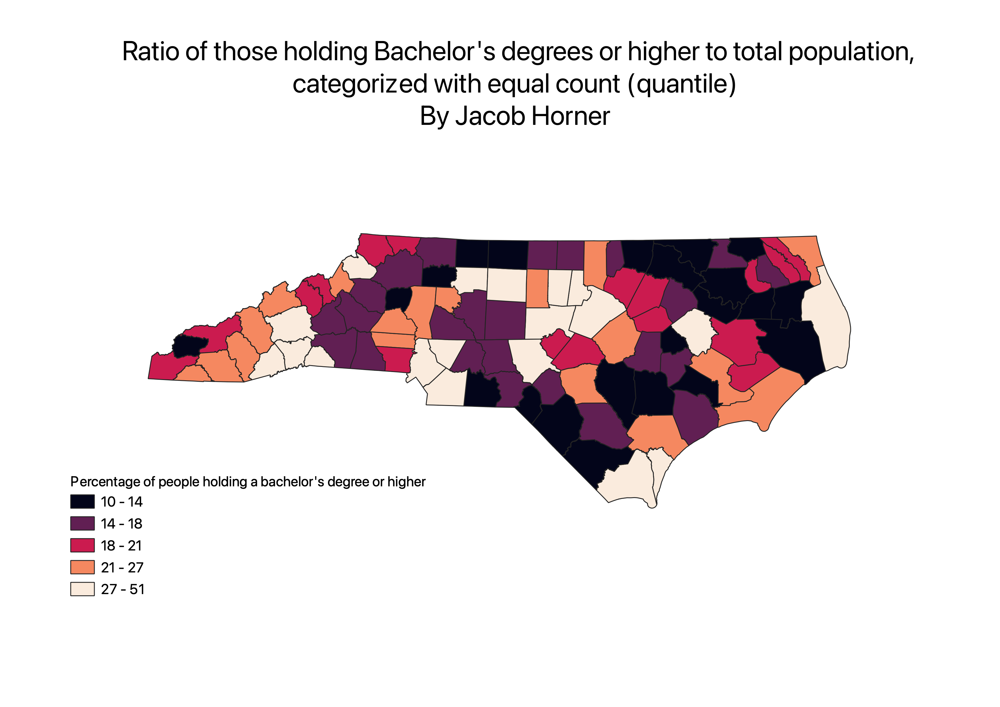

Homework 6 pt 2: Census data choropleths
Jacob Horner
Ratio of those holding bachelor's degree or higher to total population, categorized using Jenks natural breaks
Ratio of those holding bachelor's degree or higher to total population, categorized using equal count (quantile)

Ratio of those holding bachelor's degree or higher to total population, categorized using natural breaks
Discussion
I created a ratio comparing the amount of people holding a bachelor's degree or higher to the total amount of people within the county.
This generated a percentage of the degree holders in each county.
This made it easier to compare rates of education attainment in large and small counties.
Without the ratio, larger counties were disproportionately favored.
Each classification scheme had its pros and cons.
The Jenks natural breaks category seeks to normalize data through the use of an algorithm to present less deceptive omages.
The downside is that it is not intended for use with more than 5 different breaks in a data set
The equal count quantile feature attempts to put the same amount of features in each bin.
This helps keep the features equal, but it can also lead to bins that do not make intuitve sense.
The pretty breaks feature puts breaks in the data so that bin ranges are in increments of 10. This is an intuitive way to sort the data,
but it can distort the message that the author is trying to convey with the map.